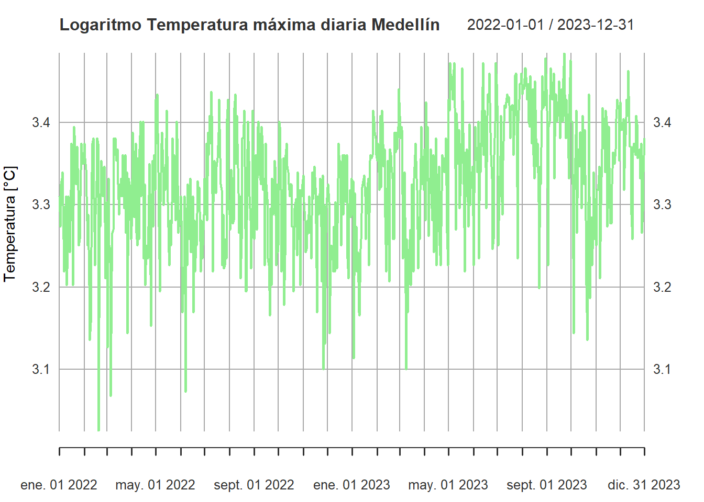
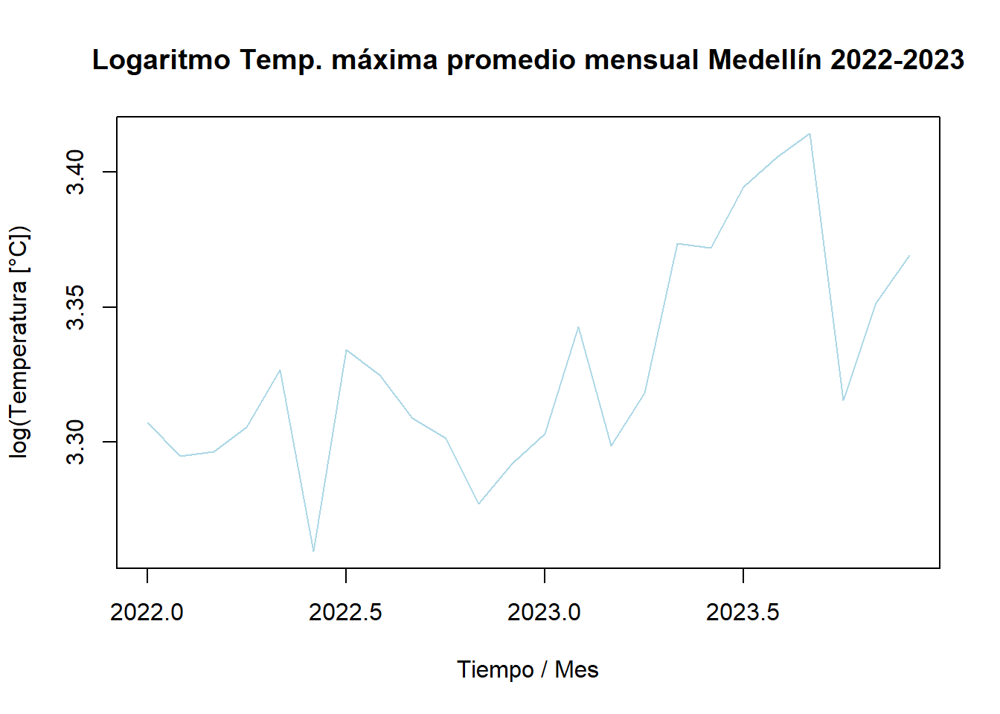
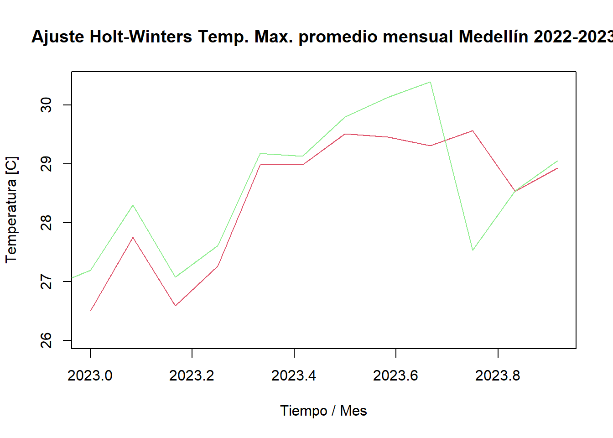
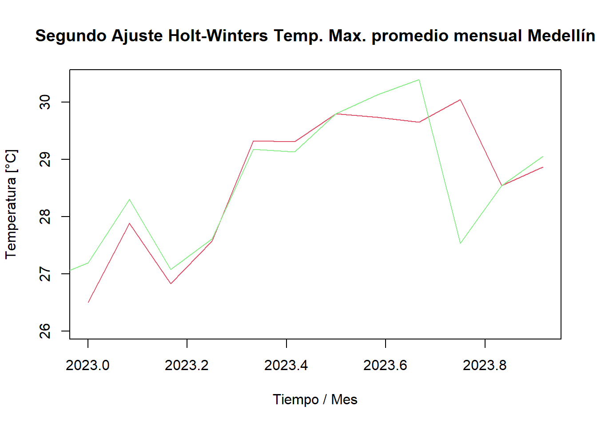
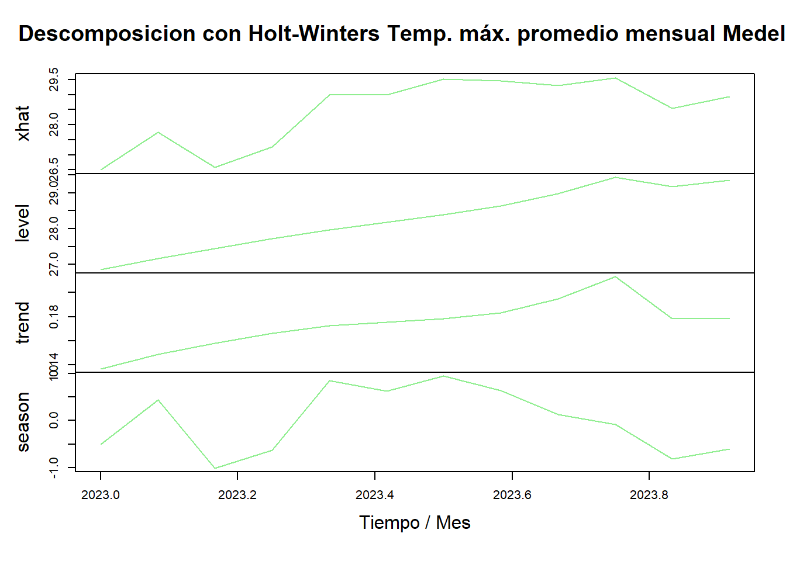
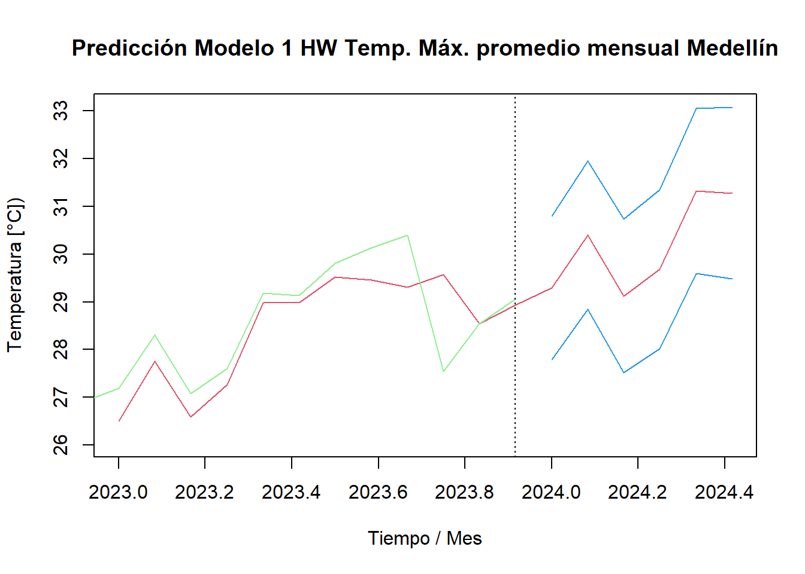
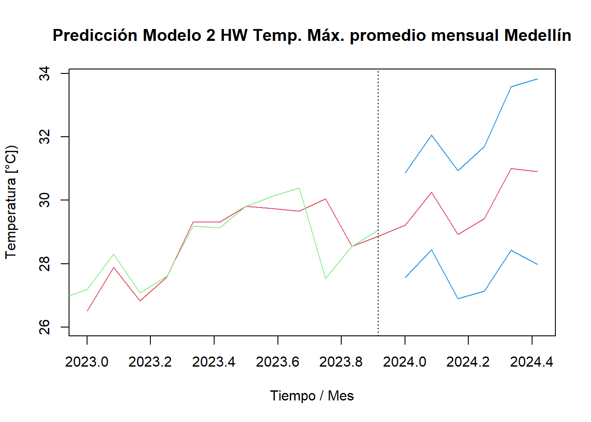

Capítulo 4 Introducción modelos pronóstico
En el presente capítulo se aplica la metodología Holt-Winter y de suavizamiento a las series de tiempo estudiadas en el documento. Con los datasets procesados en los capítulos 2 Conjunto de datos y 3 Preprocesamiento y visualización, se procede con los análisis en mención.
4.1 Tendencias y ciclos
Se seleccionaron las series con más años de datos, por lo que se analizarán la precipitación total diaria de Bogotá entre los años 2018 y 2019 y la temperatura máxima diaria de Medellín entre 2022 y 2023. A continuación se presenta la descripción inicial de los datos, la clase de los objetos creados, el inicio y fin, su frecuencia, así como la cantidad de NA y un resumen estadístico para cada serie.
# Serie xts Precipitación total diaria Bogotá 2018-2019
BOG_rain_2018_2019 <- df_rain_ts["2018/2019", "BOG"]
str(BOG_rain_2018_2019)## An xts object on 2018-01-01 / 2019-12-31 containing:
## Data: double [730, 1]
## Columns: BOG
## Index: Date [730] (TZ: "UTC")## [1] "xts" "zoo"## [1] "2018-01-01"## [1] "2019-12-31"## [1] 1## BOG
## 0# Serie ts Precipitación total diaria Bogotá 2018-2019
BOG_rain_2018_2019_ts <- as.ts(BOG_rain_2018_2019)
class(BOG_rain_2018_2019_ts)## [1] "ts"## Time-Series [1:730] from 1 to 730: 13.8 0.1 2.2 0 17.1 0.3 0.1 0 5.6 8.8 ...## Min. 1st Qu. Median Mean 3rd Qu. Max.
## 0.000 0.000 0.000 1.683 0.975 32.400# Serie xts Temperatura máxima diaria Medellín 2022-2023
MED_temp_2022_2023 <- df_temp_max_ts["2022/2023", "MED"]
str(MED_temp_2022_2023)## An xts object on 2022-01-01 / 2023-12-31 containing:
## Data: double [730, 1]
## Columns: MED
## Index: Date [730] (TZ: "UTC")## [1] "xts" "zoo"## [1] "2022-01-01"## [1] "2023-12-31"## [1] 1## MED
## 0# Serie ts Temperatura máxima diaria Medellín 2022-2023
MED_temp_2022_2023_ts <- as.ts(MED_temp_2022_2023)
class(MED_temp_2022_2023_ts)## [1] "ts"## Time-Series [1:730] from 1 to 730: 27.4 26.4 27.8 28 28.2 26 25 26.8 27.4 24.6 ...## Min. 1st Qu. Median Mean 3rd Qu. Max.
## 20.60 26.50 28.00 27.93 29.40 32.60Primero se procede a graficar con plot el comportamiento de la serie de tiempo / xts para las variables seleccionadas:
# Plot xts Precipitación Bogotá
plot(BOG_rain_2018_2019,
main='Precipitación total diaria Bogotá 2018-2019',
xlab='Fecha', ylab='Lluvia [mm]',
col="lightblue")Aunque anteriormente no se encontraron datos faltantes / NA en el conjunto de datos seleccionados para la precipitación, de la anterior gráfica se nota claramente, que entre marzo (mes 3) y agosto (mes 8) de 2019 se presentan registros seguidos sin precipitación (0 mm), aunque es de esperar que no llueva todos los días del año en Bogotá, no tiene sentido que se presenten cinco meses continuos sin registros de lluvia. Los datos anteriores permiten inferir que el sensor / pluviómetro posiblemente presentó fallas en dichos meses, por lo que se procede a revisar los datos en el dataframe y se encuentra que contiene ceros con un “formato diferente” (int 0 vs dbl 0.0) en el periodo en mención1, lo cual es indicador de una falta de validación de los datos entre finales de marzo e inicios de agosto de 2019, por lo que en dichos meses se debe ser prudente con dichos registros y si es necesario descartarlos o no tenerlos en cuenta en el análisis por atípicos / inválidos.
Caso contrario se evidencia en la figura siguiente que presenta la tendencia de la temperatura máxima diaria en Medellín y en la cual se observa fácilmente que no encuentran datos por fuera del rango de 20 a 33 ºC, que es lo esperado para dicha variable e indica consistencia en la medición y ausencia de valores extremos o datos atípicos fuera de ese rango. Esto sugiere una buena calidad de los datos y confiabilidad en las mediciones de temperatura en la estación durante el período analizado.
# Plot xts Temperatura Medellín
plot(MED_temp_2022_2023,
main="Temperatura máxima diaria Medellín 2022-2023",
xlab='Fecha', ylab='Temperatura [°C]',
col="lightgreen")Ahora con lm obtenemos la tendencia tanto para las series / ts para la precipitación y para la temperatura:
# Tendencia precipitación Bogotá
plot(BOG_rain_2018_2019_ts,
main='Tendencia Precipitación total diaria Bogotá 2018-2019',
xlab='Tiempo / Día', ylab='Lluvia [mm]',
col="lightblue")
abline(reg=lm(BOG_rain_2018_2019_ts~time(BOG_rain_2018_2019_ts)))Se observa en la figura anterior una tendencia de la precipitación en Medellín que decrece desde cerca de los 4 mm de lluvia en enero de 2018 (t=0) a prácticamente 0 mm en diciembre de 2019 (t=730). Mientras que en la figura siguiente para la temperatura se aprecia una tendencia que aumenta cerca de dos grados desde de aproximadamente 26.5 ºC en t0 a 29 ºC en t730 en los años analizados.
# Tendencia temperatura Medellín
plot(MED_temp_2022_2023_ts,
main="Tendencia Temperatura máxima diaria Medellín",
xlab='Tiempo / Día', ylab='Temperatura [°C]',
col="lightgreen")
abline(reg=lm(MED_temp_2022_2023_ts~time(MED_temp_2022_2023_ts)))A continuación se presenta un resumen de los datos y se analizan las tendencias mensuales de la precipitación (la lluvia se suma para obtener los mm acumulados por mes) y la temperatura (se promedian los valores mensuales):
# Precipitación total acumulada mensual
BOG_rain_2018_2019_monthly <- apply.monthly(BOG_rain_2018_2019, FUN=sum)
str(BOG_rain_2018_2019_monthly)## An xts object on 2018-01-31 / 2019-12-31 containing:
## Data: double [24, 1]
## Columns: BOG
## Index: Date [24] (TZ: "UTC")## Index BOG
## Min. :2018-01-31 Min. : 0.00
## 1st Qu.:2018-07-23 1st Qu.: 23.32
## Median :2019-01-15 Median : 45.00
## Mean :2019-01-14 Mean : 51.18
## 3rd Qu.:2019-07-07 3rd Qu.: 63.20
## Max. :2019-12-31 Max. :199.70# Serie ts precipitación mensual
BOG_rain_2018_2019_monthly_ts <- ts(BOG_rain_2018_2019_monthly, start=c(2018, 1), frequency=12)
# Tendencia precipitación acumulada mensual Bogotá
plot(BOG_rain_2018_2019_monthly_ts,
main='Tendencia Precipitación total acumulada mensual Bogotá 2018-2019',
xlab='Tiempo / Mes', ylab='Lluvia [mm]',
col="lightblue")
abline(reg=lm(BOG_rain_2018_2019_monthly_ts~time(BOG_rain_2018_2019_monthly_ts)))En la figura anterior se confirma que con los datos de abril, mayo, junio y julio de 2019 en el dataset se obtienen precipitaciones mensuales de cero milímetros, por lo que dichos meses se asumen como no válidos debido a fallas en el equipo de medición.
En la figura siguiente se presenta la tendencia de la temperatura máxima promedio mensual que presenta como era de esperar una línea creciente de aproximadamente de 26.5 a 29 ºC.
# Temperatura máxima promedio mensual
MED_temp_2022_2023_monthly <- apply.monthly(MED_temp_2022_2023, FUN=mean)
str(MED_temp_2022_2023_monthly)## An xts object on 2022-01-31 / 2023-12-31 containing:
## Data: double [24, 1]
## Columns: MED
## Index: Date [24] (TZ: "UTC")## Index MED
## Min. :2022-01-31 Min. :26.04
## 1st Qu.:2022-07-23 1st Qu.:27.14
## Median :2023-01-15 Median :27.57
## Mean :2023-01-14 Mean :27.92
## 3rd Qu.:2023-07-07 3rd Qu.:28.67
## Max. :2023-12-31 Max. :30.39# Serie ts temperatura mensual
MED_temp_2022_2023_monthly_ts <- ts(MED_temp_2022_2023_monthly, start=c(2022, 1), frequency=12)
# Tendencia temperatura promedio mensual Medellín
plot(MED_temp_2022_2023_monthly_ts,
main="Tendencia Temp. máxima promedio mensual Medellín 2022-2023",
xlab='Tiempo / Mes', ylab='Temperatura [°C]',
col="lightgreen")
abline(reg=lm(MED_temp_2022_2023_monthly_ts~time(MED_temp_2022_2023_monthly_ts)))A continuación obtenemos el ciclo mensual para cada una de las variables estudiadas en las ciudades seleccionadas y se grafica con aggregate.
## Jan Feb Mar Apr May Jun Jul Aug Sep Oct Nov Dec
## 2018 1 2 3 4 5 6 7 8 9 10 11 12
## 2019 1 2 3 4 5 6 7 8 9 10 11 12plot(aggregate(BOG_rain_2018_2019_monthly_ts, FUN=mean),
main='Tendencia aggregate Precip. acumulada mensual Bogotá 2018-2019',
xlab='Tiempo / Mes', ylab='Lluvia [mm]')Tanto en la gráfica anterior, como en la siguiente, en ambos casos se obtienen las mismas tendencias para la precipitación y la temperatura que las encontradas anteriormente con abline y la regresión lineal con lm.
## Jan Feb Mar Apr May Jun Jul Aug Sep Oct Nov Dec
## 2022 1 2 3 4 5 6 7 8 9 10 11 12
## 2023 1 2 3 4 5 6 7 8 9 10 11 12plot(aggregate(MED_temp_2022_2023_monthly_ts, FUN=mean),
main="Tendencia aggregate Temp. máxima mensual Medellín 2022-2023",
xlab='Tiempo / Mes', ylab='Temperatura [°C]',)Ahora se presenta la dispersión / comportamiento mensual por medio de boxplots tanto para las precipitaciones en Bogotá, así como para las temperaturas en Medellín:
# Boxpplot lluvia mensual Bogotá
boxplot(BOG_rain_2018_2019_monthly_ts~cycle(BOG_rain_2018_2019_monthly_ts),
main="Dispersión Precipitación total acumulada mensual Bogotá 2018-2019",
xlab='Mes', ylab='Lluvia [mm]',
col="lightblue")# Boxplot temperatura mensual Medellín
boxplot(MED_temp_2022_2023_monthly_ts~cycle(MED_temp_2022_2023_monthly_ts),
main="Dispersión Temperatura máxima mensual Medellín 2022-2023",
xlab='Mes', ylab='Temperatura [°C]',
col="lightgreen")Tal como se refiere en los materiales de la unidad, se procede a probar la función logaritmo2 para graficar nuevamente los datos de temperatura y evidenciar si se obtiene alguna mejora en la visualización de las series diarias y mensuales.
# Logaritmo temperatura Medellín
plot(log(MED_temp_2022_2023),
main="Logaritmo Temperatura máxima diaria Medellín",
xlab='Fecha', ylab='Temperatura [°C]',
col="lightgreen")
# Logaritmo temperatura mensual Medellín
plot(log(MED_temp_2022_2023_monthly_ts),
main='Logaritmo Temp. máxima promedio mensual Medellín 2022-2023',
xlab='Tiempo / Mes', ylab='log(Temperatura [°C])',
col="lightblue")
En las gráficas anteriores no se observa cambio significativo en los comportamientos / tendencias de las series de temperatura, más allá de los valores / órdenes de magnitud obtenidos al aplicar logaritmo.
4.2 Modelo Holt-Winters
Ahora, se aplica el modelo Holt-Winters para la serie mensual de temperatura en Medellín. Esta metodología requiere indicar los siguientes parámetros: 1) alfa, que el parámetro de suavizado del nivel, 2) beta el parámetro de suavizado para la tendencia, 3) gamma el parámetro de suavizado para la estacionalidad, 4) tipo de estacionalidad. Como se observo en el capitulo anterior, la prueba de Dickey-Fuller rechazó la hipótesis nula, indicando una estacionalidad aditiva la cual sera empleada en el método Holt-Winters, sin embargo los otros parámetros deben ser optimizados, este procedimiento es realizado por la función HoltWinters de manera automática o puede ser ejecutado externamente empleando optim y definiendo la métrica de error que se desee evaluar, en este capítulo se realizan ambos métodos.
# Holt Winters temperatura mensual Medellín
MED_temp_2022_2023_monthly_HW <- HoltWinters(MED_temp_2022_2023_monthly_ts,
seasonal = "additive")
plot(MED_temp_2022_2023_monthly_HW,
main='Ajuste Holt-Winters Temp. Max. promedio mensual Medellín 2022-2023',
xlab='Tiempo / Mes', ylab='Temperatura [C]',
col="lightgreen")
Los parámetros para la temperatura empleados por el modelo Holt-winters de manera automática fueron los siguientes:
cat("alpha: ", MED_temp_2022_2023_monthly_HW$alpha, " beta: ", MED_temp_2022_2023_monthly_HW$beta, " gamma: ", MED_temp_2022_2023_monthly_HW$gamma)## alpha: 0.2369436 beta: 0.07256704 gamma: 0.1A continuación se ejecuta el modelo Holt-Winters buscando un nuevo set de parámetros buscados mediante una optimización teniendo en cuenta como función objetivo el Error de Porcentaje Medio Absoluto (MAPE), con el fin de evaluar si hay un cambio drástico frente a la metodología automática.
# Función error MAPE
error_function <- function(params) {
alpha <- params[1]
beta <- params[2]
gamma <- params[3]
hw_fit <- HoltWinters(MED_temp_2022_2023_monthly_ts, alpha = alpha, beta = beta, gamma = gamma)
abs_percent_errors <- abs(residuals(hw_fit) / MED_temp_2022_2023_monthly_ts)
mape <- mean(abs_percent_errors, na.rm = TRUE) * 100
return(mape)
}
# Optimización parámetros
initial_params <- c(0.2, 0.2, 0.2)
optimized_params <- optim(initial_params, error_function)$par
cat("alpha: ", optimized_params[1], " beta: ", optimized_params[2], " gamma: ", optimized_params[3])## alpha: 0.3516182 beta: 0.2725255 gamma: 0.118212# Modelo óptimo
MED_temp_2022_2023_monthly_HW_optimal <- HoltWinters(MED_temp_2022_2023_monthly_ts, alpha = optimized_params[1], beta = optimized_params[2], gamma = optimized_params[3])
plot(MED_temp_2022_2023_monthly_HW_optimal,
main='Segundo Ajuste Holt-Winters Temp. Max. promedio mensual Medellín',
xlab='Tiempo / Mes', ylab='Temperatura [°C]',
col="lightgreen")
Se observa que el modelo 1 el cual usa los parámetros obtenidos automáticamente versus el segundo modelo que obtuvo los parámetros con una función de error diferente, MAPE, presentan una muy baja diferencia entre ellos, lo cual puede deberse a el bajo número de datos, 24 registros.
A continuación se presentan la descomposición para el modelo original/automático obtenido anteriormente:
# Descomposición Holt Winters log temperatura Medellín
plot(fitted(MED_temp_2022_2023_monthly_HW),
main='Descomposicion con Holt-Winters Temp. máx. promedio mensual Medellín',
xlab='Tiempo / Mes', ylab='Temperatura [°C])',
col="lightgreen")
4.3 Predicciones iniciales
Ahora que contamos con los modelos Holt Winters (HW) aplicados a la series mensuales de temperatura en Medellín, se procede a realizar unas predicciones iniciales para seis meses.
# Predicción Holt Winters temperatura Medellín
MED_temp_2022_2023_monthly_Pred <- predict(MED_temp_2022_2023_monthly_HW, 6, prediction.interval = TRUE)
MED_temp_2022_2023_monthly_Pred## fit upr lwr
## Jan 2024 29.29153 30.79737 27.78569
## Feb 2024 30.39437 31.94807 28.84066
## Mar 2024 29.12354 30.73007 27.51701
## Apr 2024 29.68363 31.34787 28.01939
## May 2024 31.32207 33.04881 29.59533
## Jun 2024 31.27666 33.07057 29.48276# Predicción modelo optimizado temperatura Medellín
MED_temp_2022_2023_monthly_Pred2 <- predict(MED_temp_2022_2023_monthly_HW_optimal, 6, prediction.interval = TRUE)
MED_temp_2022_2023_monthly_Pred2## fit upr lwr
## Jan 2024 29.21094 30.86264 27.55924
## Feb 2024 30.24939 32.05889 28.43988
## Mar 2024 28.91671 30.93649 26.89694
## Apr 2024 29.41702 31.69600 27.13804
## May 2024 30.99904 33.58114 28.41695
## Jun 2024 30.90072 33.82475 27.97668A continuación se observa el delta entre la predicción de ambos modelos, en este caso se observan ligeras diferencias entre ambos tanto en su predicción como en sus límites superior e inferior, mostrando que el segundo modelo tiende a predecir valores más bajos que el original debido a los parámetros de suavizado empleados son más altos en el primer modelo. Esto se debe a que parámetros más altos tienden a capturar las tendencias más recientes por ende resultando en datos de temperatura ligeramente más bajos en el segundo modelo.
## MED_temp_2022_2023_monthly_Pred.fit
## Jan 2024 0.08058729
## Feb 2024 0.14498089
## Mar 2024 0.20682333
## Apr 2024 0.26661345
## May 2024 0.32302819
## Jun 2024 0.37594672
## MED_temp_2022_2023_monthly_Pred.upr
## Jan 2024 -0.06527701
## Feb 2024 -0.11081771
## Mar 2024 -0.20641898
## Apr 2024 -0.34812350
## May 2024 -0.53232425
## Jun 2024 -0.75418544
## MED_temp_2022_2023_monthly_Pred.lwr
## Jan 2024 0.2264516
## Feb 2024 0.4007795
## Mar 2024 0.6200656
## Apr 2024 0.8813504
## May 2024 1.1783806
## Jun 2024 1.5060789Ahora se grafican las predicciones encontradas tanto con el modelo HW automático / original y el segundo con parámetros optimizados:
# Gráfico Predicción Holt Winters log temperatura Medellín
plot(MED_temp_2022_2023_monthly_HW, MED_temp_2022_2023_monthly_Pred,
main='Predicción Modelo 1 HW Temp. Máx. promedio mensual Medellín',
xlab='Tiempo / Mes', ylab='Temperatura [°C])',
col=c("lightgreen", "green"))
# Gráfico Predicción Holt Winters log temperatura Medellín
plot(MED_temp_2022_2023_monthly_HW_optimal, MED_temp_2022_2023_monthly_Pred2, main='Predicción Modelo 2 HW Temp. Máx. promedio mensual Medellín',
xlab='Tiempo / Mes', ylab='Temperatura [°C])',
col=c("lightgreen", "green"))
Las predicciones encontradas con Holt-Winters siguen una tendencia creciente de la temperatura máxima mensual y parece no tener en cuenta el ciclo climático, pero es una primera aproximación que como todo pronóstico se debe analizar en profundidad y tener claro los datos usados para generar predicciones futuras.
Independiente de las predicciones obtenidas, es importante tener en cuenta las limitaciones del modelo de Holt-Winters. Una de las principales limitaciones es la característica multiplicativa de la estacionalidad. Cuando hay períodos con valores muy bajos, como puede ser el caso en datos de temperatura, la estacionalidad puede comportarse de manera inesperada debido a las diferencias relativas significativas. Por lo tanto, aunque Holt-Winters es una técnica efectiva para el pronóstico, es necesario considerar estas limitaciones y realizar análisis adicionales para una comprensión más completa del comportamiento de los datos.